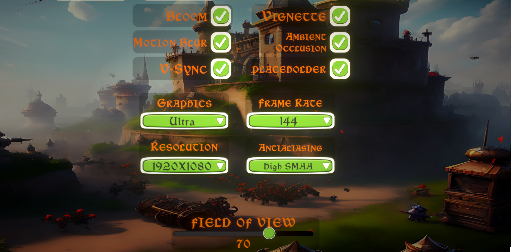
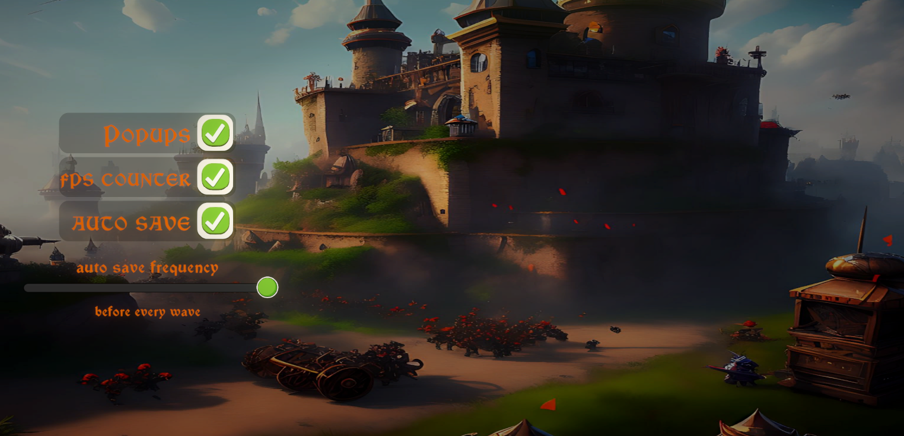

New Settings
Greetings, Guardians!
I'm thrilled to unveil a brand new Settings Menu, designed to empower you with greater control over your gaming experience. Let's dive into the details:
Graphics Settings:
Within the Settings Menu, you'll find an array of graphics presets tailored to suit a variety of hardware configurations. From the performance-focused "Microwave" preset to the visually stunning "Ultra" preset, you can now easily adjust your graphics settings to achieve the perfect balance between performance and visual fidelity.
Sensitivity Controls:
Tired of struggling with sensitivity settings that just don't feel right? Say no more! Our revamped Settings Menu allows you to customize your sensitivity preferences with precision. Not only can you adjust the sensitivity for the X and Y axes independently. I have also introduced a completely new way input is handled code-wise for precise mouse movements.
Auto-Save Options:
Never
again will you have to worry about losing progress due to unexpected interruptions.
With our new auto-save
options, you can choose when and how frequently the game saves your progress. Whether you prefer to save before
each wave, after each wave, or at regular intervals every few minutes, rest assured that your progress will be
safeguarded, allowing you to focus on the thrill of the battle.
Language Options:
Language should never be a barrier to enjoyment. That's why Fortress Guardian now offers support for multiple languages, allowing you to experience the game in your preferred language for an even more immersive gameplay experience. I'm also inviting you guardians to contribute to translating the world of Romardia to your native language.
Stay
tuned for more updates as we continue to refine and expand Fortress Guardian based on your feedback.
Thank you
for your support, and may your fortress stand strong against the encroaching darkness!
See you guardians
Ondrej Janousek
Lead developer of Fortress Guardian